| Укладка тротуарной плитки своими руками. |
|
Укладка тротуарной плитки своими руками. Весь процесс от начала и до конца.
Укладка тротуарной плитки своими руками: подготовка почвы и формирование тротуаров.
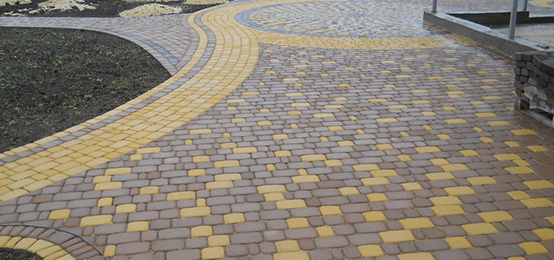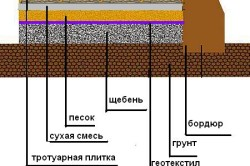 Хотите выполнить монтаж тротуарной плитки так, чтобы она верой и правдой служила вам долгие годы? Тогда придется досконально выдержать всю технологию ее монтажа. И начать стоит из подготовительных работ, которые предусматривают подготовку основы и формирование площадок, и дорожек. Осуществляется это достаточно просто: Во-первых, делаем разметку - забиваем колышки и натягиваем нити, которые помечают контуры зон, на которых будет проводиться укладка тротуарной плитки. Во-вторых, в пределах мощение тротуарной плитки (брусчатки) снимаем верхний слой почвы на глубину 20-30см. В-третьих, нужно тщательным образом утрамбовать основу. Для этих целей понадобится трамбовка - изготовить ее можно из большого швеллера, приварив к нему кусок металлической трубы. В-четвертых, на дно утрамбованных выемок засыпаем щебень мелкой фракции - тщательным образом выравниваем его и опять утрамбовываем. В-пятых, сверху щебня насыпаем песок и опять утрамбовываем его самим тщательным образом. Трамбовка земли перед укладкой тротуарной плитки.  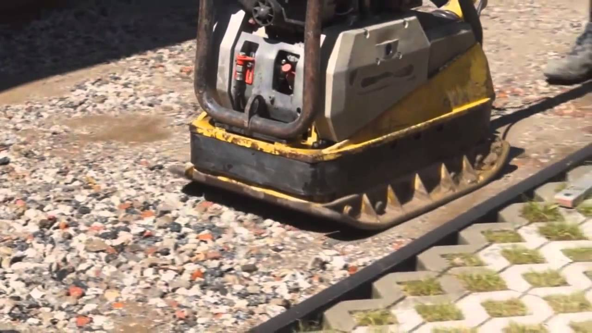 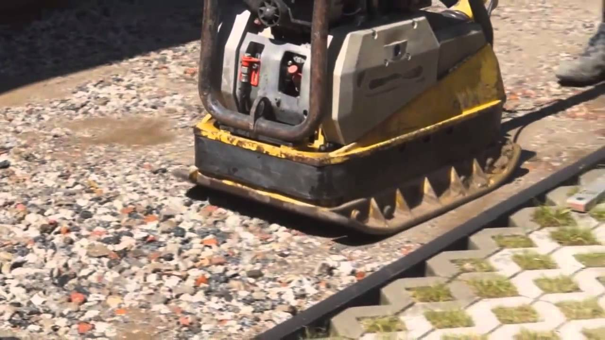Именно такое основание предусматривает технология мощение тротуарной плитки. В некоторых случаях плитка может укладываться на бетонную основу - к таким способам монтажа удаются на участках, рельеф которых имеет достаточно сильный склон. Кроме того, правильно подготовленная бетонная основа дает возможность использовать площадку, изложенную тротуарной плиткой в качестве стоянки для любых автомобилей. Сами понимаете, нагрузка от них высока, и подготовлена стандартным способом основа просто не в состоянии долго выдерживать нагрузку от автомобильного транспорта. В этом случае мы предлагаем обратиться к нашим специалистам в Черновцах за советом: монтаж тротуарной плитки, как его сделать, какая нужная основа под заезд (под тротуарную плитку), какой слой подсыпки нужен (щебень, отсев), какую тротуарную плитку купить (толщина, фактура). Кстати, Черновцы славятся выбором и изготовлением тротуарной плитки. На завершающем этапе подготовительных работ проводится установка бетонных бордюров - их необходимо смонтировать как можно ровнее. Бордюр устанавливается с помощью стандартного цементно-песчаного раствора, приготовленного в пропорции 1:4 или даже 1:5. Чтобы эти изделия установить ровно, необходимо использовать натянутую нить. Укладка тротуарной плитки. Технология: последовательность работ. 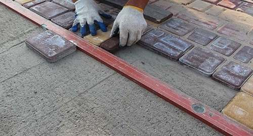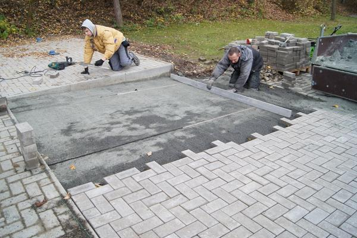 Как и стяжка пола или изготовления бетонной основы, вопрос, как сделать мощение тротуарной плитки, предусматривает установка маяков, в качестве которых понадобится профильная труба с пересечением 40 на 40мм. Сразу на весь объем работ покупать ее нестоит. Хватит всего пару таких труб. Они устанавливаются на подкладки, в качестве которых можно использовать туже тротуарную плитку.
После того, как будут установленные маяки, нужно приготовить сухую смесь песка с цементом в пропорции 1:6. Эта смесь засыпается между маяками, после чего выравнивается. Трамбовать ее не нужно - это состоится автоматически в процессе мощение тротуарной плитки.
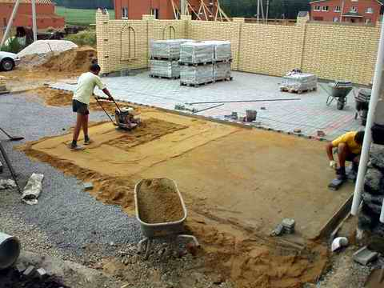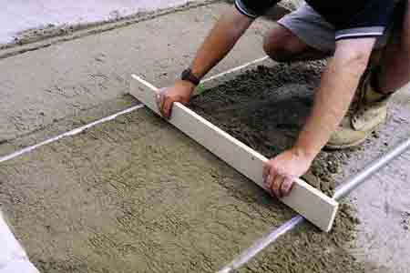 Чтобы качественно уровнять цементно-песчаную смесь, необходимо изготовить специальный шаблон. Для этого отлично подойдет деревянная доска, по краям, которой вырезаются прямоугольники. Этими вырезами доска устанавливается на бетонные бордюры (в Черновцах, кстати, их выбор является огромным), после чего при перемещении шаблона песок по них выравнивается равномерно. После такой процедуры маяки перемещаются на новое место, а на ровном участке осуществляется укладка тротуарной плитки. Решение вопроса, как сделать мощение тротуарной плитки, тоже неотмечается какими-то трудностями. Для осуществления этого процесса вам понадобятся лишь две вещи: тяжелый резиновый молоток и болгарка с бриллиантовым диском по камню для резки тротуарной плитки. Укладка тротуарной плитки. Как это сделать? 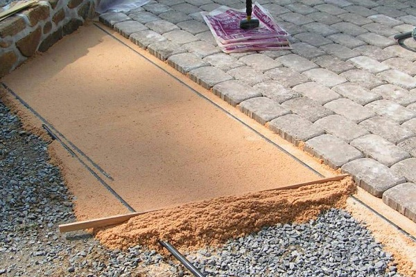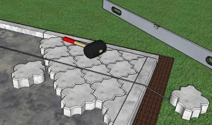 Еще к началу мощение тротуарной плитки нужно определиться с рисунком - дело в том, что в большинстве случаев этот облицовочный материал для тротуара можно монтировать разными способами. Варианты укладки тротуарной плитки отличаются огромным разнообразием - ее можно класть по-диагонали, по-прямой, дежурить камни разных форм и цветов. В целом структура и узор будущих тротуаров необходимо в совершенстве выучить. Положить плитку (брусчатку) своими руками достаточно просто, если есть рисунок, то начинать нужно из него. Если узор отсутствует, и плитка устанавливается как есть, то нет никакой разницы, откуда вы начнете. Главное - рассчитать, чтобы резки было как можно меньше. Варианты укладки тротуарной плитки. 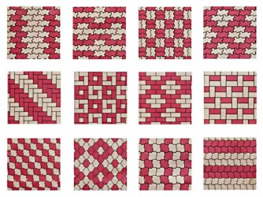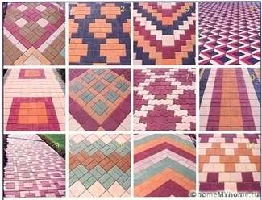 Теперь о самой технологии укладки тротуарной плитки - здесь все просто. Укладываем плитку на предварительно уровненную цементно-песчаную смесь и забиваем ее тяжелым резиновым молотком. Начинать лучше сразу из нескольких плиток - нужно понимать, что поймать необходимую плоскость тротуара, имея лишь одну положенную плитку, не выйдет. В этом отношении ее монтаж лучше проводить рядами - длинный ряд более легко контролировать уровнем. В процессе создание тротуаров и площадок практически никогда не обходится без монтажа водоотводных желобов (водоотвод) - их придется приобрести вместе с самой плиткой. Монтаж желобов и водоприемников осуществляется одновременно с укладкой тротуарной плитки. Здесь необходимо следить за тем, чтобы желоба ложились ровно, как под линейку. Вот таким образом осуществляется укладка (монтаж) тротуарной в Черновцах (Черновцы). Все просто и в то жевремя сложно - на процесс работы может влиять огромное количество разнообразных факторов. Нельзя презирать особенностями местного рельефа, формой и структурой плитки, погодой во время укладки тротуарной плитки, толщину подсыпки. Эсли у Вас возникнут какие-то вопросы, обращайтесь к нам: ”Укладка/монтаж тротуарной плитки” в Черновцах +38050-912-68-41, +38097-016-56-46. |